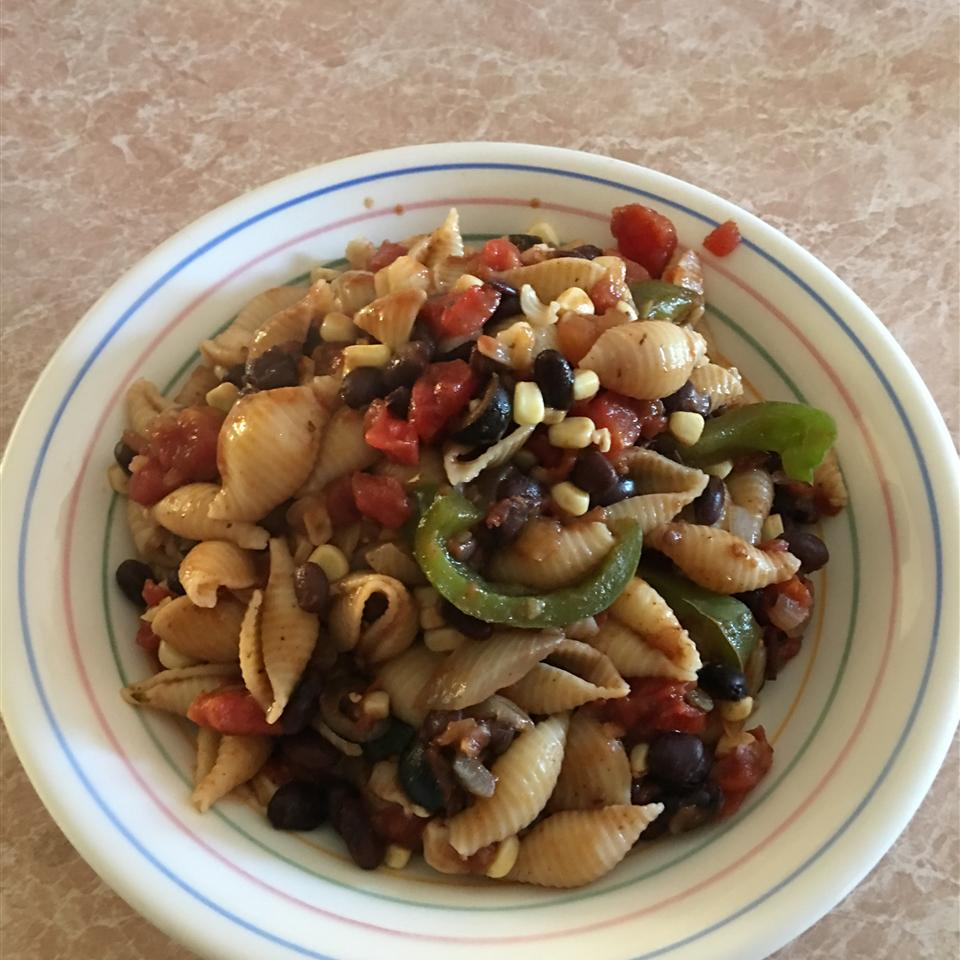

Mexican pasta

Ready in 20 minutes."Everyone loved this recipe! I doubled everything except the beans. I used Rotel in place of plain stewed tomatoes. It had just the right amount of zing!" raves April T. Jones
Ingredients
- ½ pound seashell pasta
- 2 tablespoons olive oil
- 2 onions, chopped
- 1 green bell pepper, chopped
- ½ cup sweet corn kernels
- 1 (15 ounce) can black beans, drained
- 1 (14.5 ounce) can peeled and diced tomatoes
- ¼ cup salsa
- ¼ cup sliced black olives
- 1 ½ tablespoons taco seasoning mix
- salt and pepper to taste
Directions
- Step 1
Bring a large pot of lightly salted water to a boil. Add pasta and cook for 8 to 10 minutes or until al dente; drain.
- Step 2
While pasta is cooking, heat olive oil over medium heat in a large skillet. Cook onions and bell pepper in oil until lightly browned, about 10 minutes.
- Step 3
Stir in corn and heat through. Stir in black beans, tomatoes, salsa, olives, seasoning mix, and salt and pepper and cook until thoroughly heated, about 5 minutes.
- Step 4
Toss sauce with cooked pasta and serve.